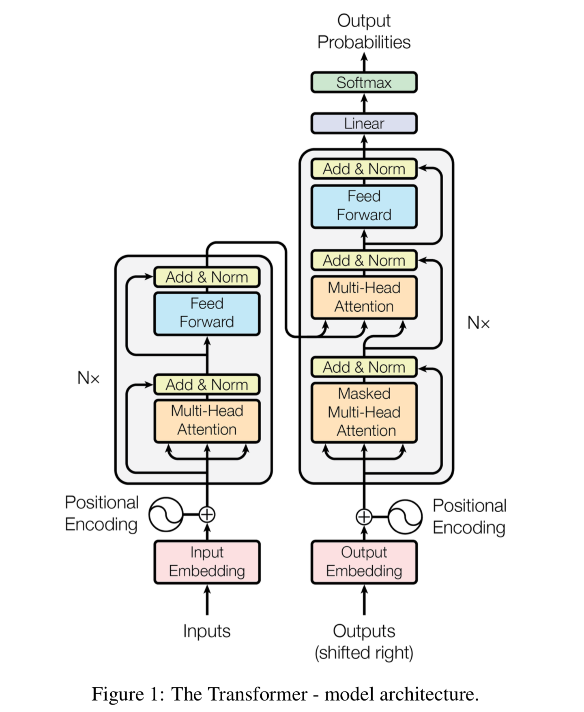
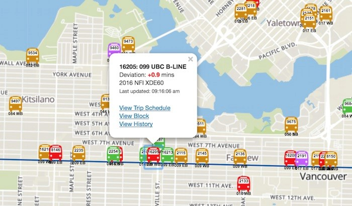
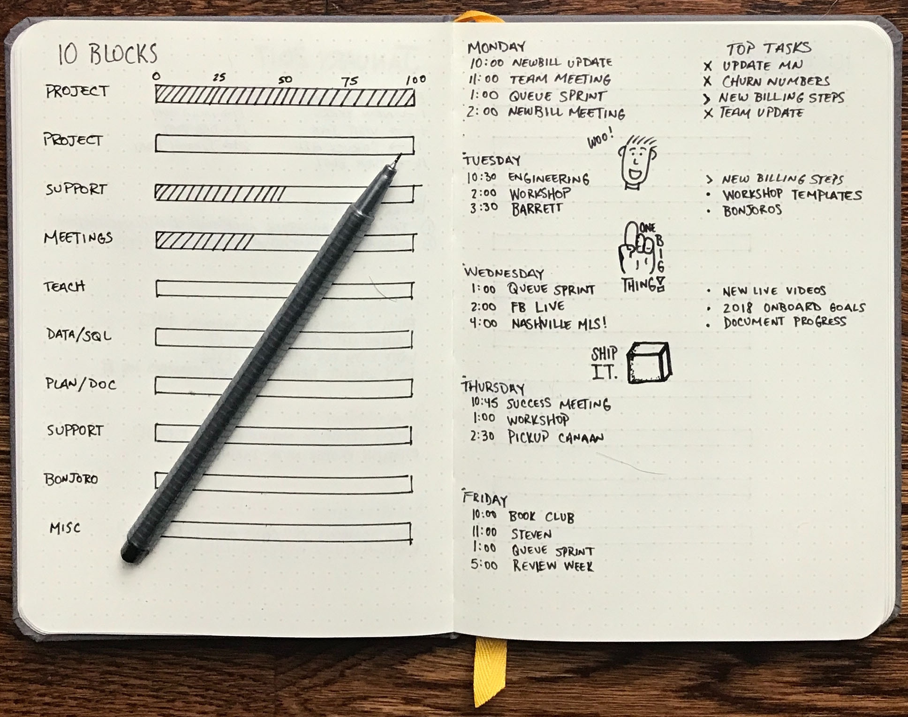

My Portfolio
Adventures in CS

First Principles Transformers
- Implemented Transformer neural network from scratch and scaled to SOTA NLP models like GPT
- Constructed and elucidated self-attention, masking, word & positional embedding, etc.
- Experimented with smaller GPT3 and iGPT networks to generate Haiku and CIFAR-10 images
learn more

Buses Route App
- Android application in Java that shows stop and bus locations, bus routes and real-time arrival
information using Vancouver Translink Open API
- Implemented models for bus stop, bus route, arrival data
- Built JSON parsers, JUnit tests
Learn more

Online Djournal
- Used Django to construct a website to write journals online
- Implemented Django apps to allow users to create, edit and save journal entries
- Wrote HTML templates with customized CSS file to display contents
- Backend database using MySQL with mysqlclient driver
Learn more